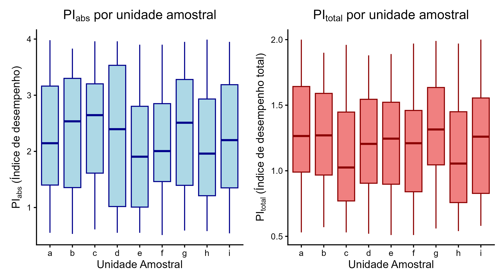
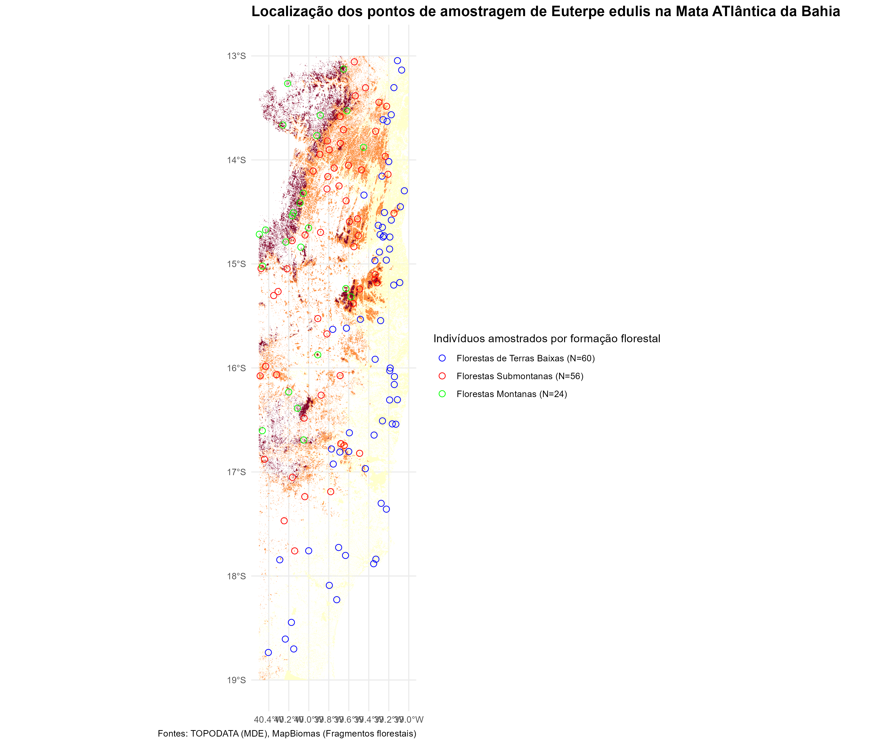

# 1. Execução do Modelo (mantendo seu código, mas idealmente seria um LMM/GLMM)
modelo <- lm(
lma ~ formacao + campanha + temperatura + umidade + precipitacao,
data = dados
)
# 2. Exibe o resumo do modelo, crucial para ver p-valores, R-quadrado e coeficientes.
summary(modelo)Análise de atributos morfofisiológicos foliares de uma palmeira em ambientes de altitude
Trabalho final da disciplina de Fluxo de Trabalho Reprodutível com Dados Ecológicos em R
O objetivo do presente projeto foi verificar a influência de variáveis abióticas em atributos morfofisiológicos de indivíduos jovens de Euterpe edulis em regiões de altitude no Sul da Bahia. Buscando compreender se modificações em condições abióticas, relacionadas com mudanças de altitude, influenciam atributos morfofisiológicos da palmeira E. edulis.
1 1. Dados
Fonte de dados de altitude: TOPODATA.
Fonte dados de cobertura da Mata Atlântica: MapBiomas
1.1 1.1. Dicionário de variáveis
Altura do indivíduo (H);
Diâmetro do indivíduo (D);
Área foliar (LA);
Massa foliar específica (LMA);
Conteúdo absoluto de água (AWC);
Teor de massa seca foliar (LDMC); e
Índices de desempenho da etapa fotoquímica da fotossíntese (PIabs e PItotal).
2 2. Métodos
Os dados utilizados são fictícios e foram criados de forma a reproduzir o que se espera do conjunto de dados real que será obtido a partir do trabalho de tese da autora. Para alcançar o objetivo proposto assume-se que foram realizadas amostragens de 20 indivíduos no estágio ontogenético Jovem I de E. edulis em cada unidade amostral. As coletas foram realizadas em nove unidades amostrais, sendo três em cada classe de altitude, buscando abarcar três tipos de formações florestais: de Terras Baixas, Submontanas e Montanas. Totalizando, assim, 180 indivíduos amostrados, 60 em cada uma das formações. Foram realizadas duas campanhas de coleta.
Foram obtidos dos indivíduos amostrados atributos morfofisiológicos que podem estar associados a respostas de espécies vegetais à variações em condições ambientais como: altura (H), diâmetro (D), área foliar (LA), massa foliar específica (LMA), conteúdo absoluto de água (AWC), teor de massa seca foliar (LDMC) e Índices de desempenho da etapa fotoquímica da fotossíntese (PIabs e PItotal).
As variáveis abióticas foram obtidas para cada uma das unidades amostrais e representam algumas das condições ambientais encontradas nos locais amostrados, são elas: temperatura média mensal, umidade relativa média mensal, precipitação média mensal e tipo de solo.
O fluxo de trabalho se iniciou com a criação do conjunto de dados. Duas planilhas foram criadas, uma com as informações referentes aos atributos morfofisiológicos e outra com as variáveis abióticas relacionadas as unidades amostrais. As planilhas geradas (data/data_raw/atributos_ficticios.csv e data/data_raw/abioticos_ficticios.csv) foram unidas e salvas em data/data_tratados/dados_completos.csv. Esses passos foram realizados em scripts/01_criacao_planilhas.R.
Por se tratarem de dados fictícios, não existem coordenadas geográficas dos pontos de coleta dos dados. Buscando criar essas informações o scripts/02_altitude_classificado.R foi criado. O raster de altitude para a Bahia foi obtido do Banco de Dados Geomorfométricos do Brasil (TOPODATA). Os rasteres são fornecidos por quadrículas, por isso foi realizada a união delas para a criação de um raster único de altitude para a região Sul da Bahia. Tendo em vista que as coletas foram realizadas em três tipos de formações florestais (Terras Baixas, Submontanas e Montanas) o raster de altitude foi classificado levando em consideração as altitudes em que essas formações ocorrem.
Em seguida foi realizada a criação dos pontos amostrais. Para isso utilizou-se um raster de fragmentos florestais de Mata Atlântica (ref), buscando amostrar apenas regiões florestadas no Sul da Bahia. O objetivo foi amostrar 60 pontos aleatórios, com cobertura florestal, em cada categoria do raster de altitude classificado (scripts/03_pontos_amostrais.R). Essas informações serão usadas posteriormente para a criação no mapa dos pontos de coleta. As manipulações de dados espaciais foram realizadas utilizando o pacote Terra versão 1.8-60.
Buscando compreender como os dados morfofisiológicos se comportaram entre as unidades amostrais, foram criados gráficos boxplot de forma exploratória. Essa etapa foi feita para as variáveis PIabs e PItotal em scripts/04_exploratoria.R. Em seguida foi realizada a análise estatística com a criação de um modelo, buscando alcançar o objetivo do projeto e compreender a influência de fatores abióticos nos atributos morfofisiológicos. Foi construído um modelo de Regressão Linear Múltipla utilizando a variável resposta massa foliar específica (LMA) em scripts/05_modelo.R.
Por fim, o mapa com os pontos de coleta foi feito em scripts/06_mapa_uni_amostrais.R.
3 3. Resultados
3.1 3.1. Análises exploratórias
Gráfico exploratório de variáveis fisiológicas nas nove unidades amostrais.

3.2 3.2. Análise de Regressão para LMA (massa foliar específica)
O efeito das variáveis ambientais na massa foliar específica (LMA) foi avaliado por meio de um modelo de regressão linear múltipla. O modelo final gerado é apresentado na Tabela 4.1.
3.3 3.3. Mapa de unidades amostrais

4 Discussão / Limitações
A massa foliar específica (LMA) não foi influenciada pelas variáveis ambientais. O que pode ser explicado pelo fato de que a LMA foi gerada de forma aleatória entre as unidades amostrais, portanto as características ambientais atribuídas as unidades amostrais não explicam as variações na LMA.
Uma das limitações encontradas foi a quantidade de pontos gerados em cada formação florestal em ambientes florestados no Sul da Bahia. Para a categoria de Terras Baixas os 60 pontos desejados foram obtidos, porém as demais formações (Submontanas e Montanas) não tiveram a quantidade de pontos necessárias para adicionar a variável “altitude” nas análises posteriores. Porém, usei esses pontos para fazer o gráfico.
5 Reprodutibilidade
Os pacotes utilizados foram: readr, dplyr, tibble, tidyverse, lubridate, patchwork, terra, sf, ggplot2.
Os dados de altitude podem ser baixados no site no site do Banco de Dados Geomorfométricos do Brasil (TOPODATA)